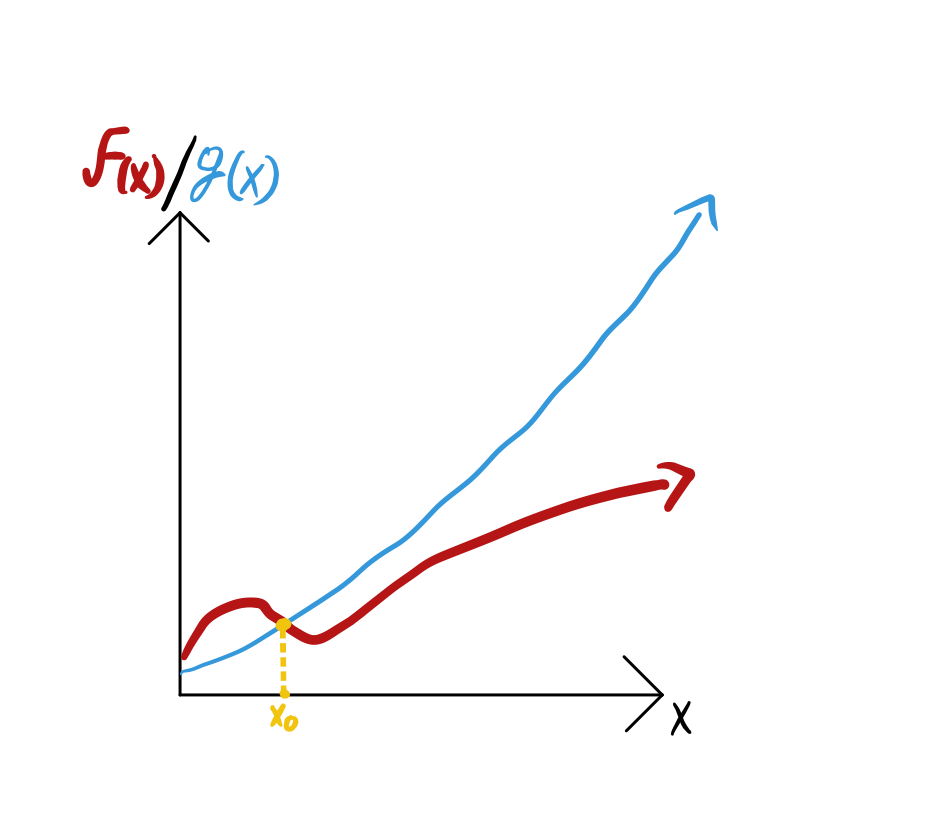

A Not Complex guide to Complexity Theory
January 31st, 2023Asymptotic Notation
In order to be able to quantify the amount of resources an algorithm requires, we must first learn asymptotic notation, which is the standard in computer science to quantify them. Asymptotic notation describes a function in terms of its behavior as the input approaches infinity or: f(x) as x -> infinity. For example let’s start by defining one of the most used notations, the Big O notation. Say you have a function f(x) which you are comparing to another function g(x). Now let’s assume that we ignore anything that happens to both functions before some arbitrary point x_0, but after this point, f(x) is always below g(x). See the figure below for an example
